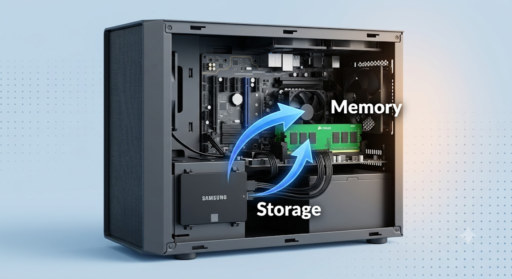
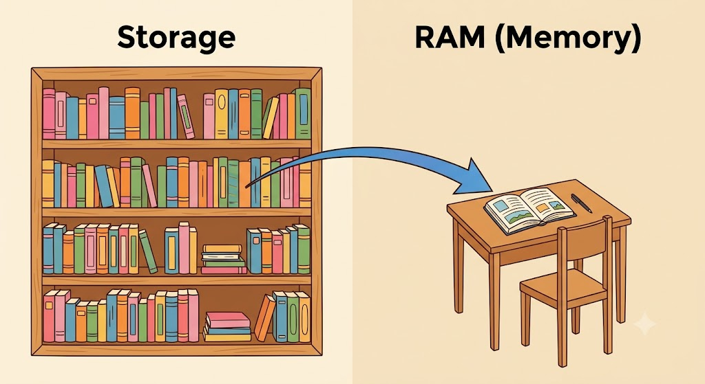
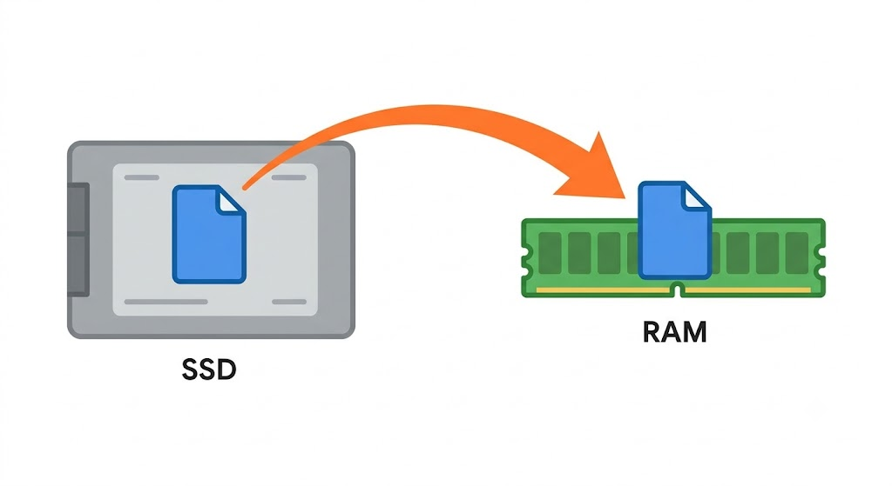
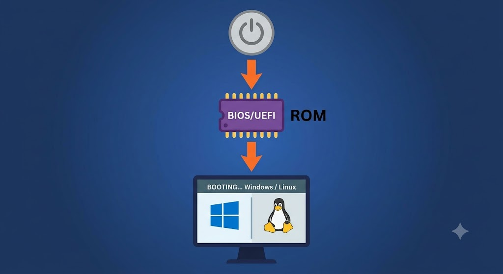
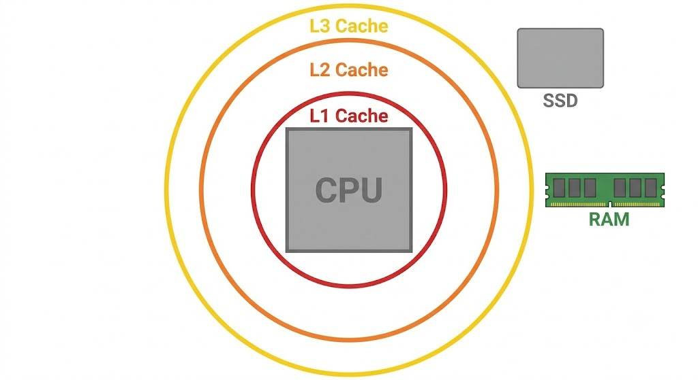
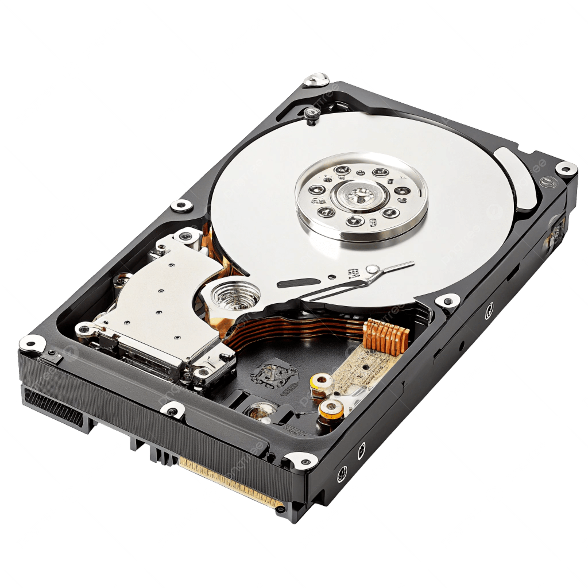
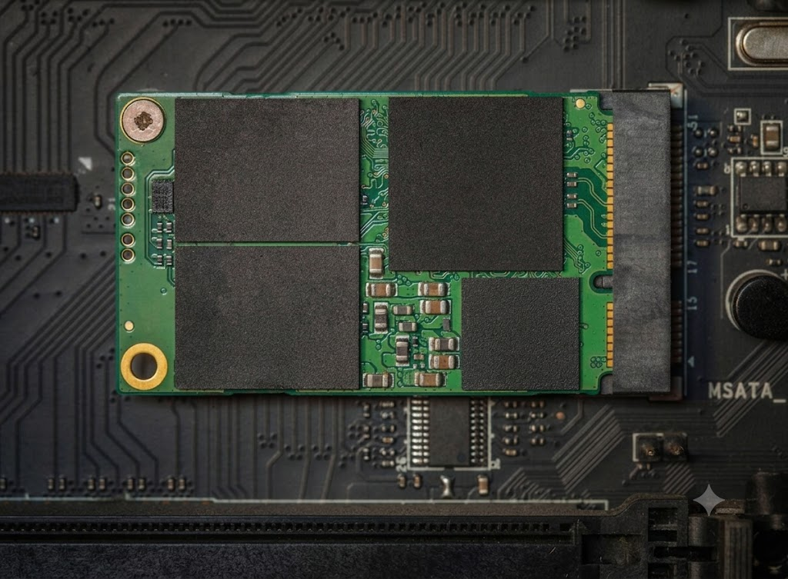
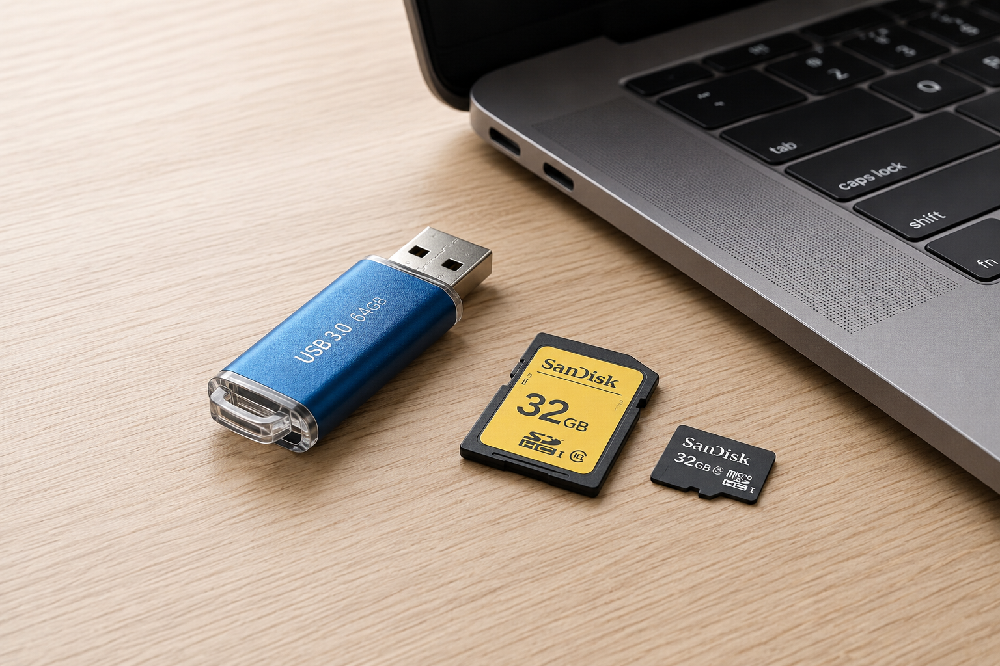

Computer Memory & Storage
المستوى الأول
تعرف على الفرق بين الذاكرة والتخزين، وأنواع الذاكرة، ووحدات التخزين، وكيف تنتقل البيانات بينها.
بعد الانتهاء من هذا الدرس، ستكون قادرًا على:
يستخدم الحاسوب البيانات باستمرار أثناء تشغيل البرامج والألعاب والتطبيقات المختلفة. لكن هل تساءلت يومًا:
الإجابة تكمن في وجود جزأين مهمين داخل الحاسوب، لكل منهما وظيفة مختلفة:
🧠 الذاكرة (Memory) و 💽 التخزين (Storage)
ورغم أن الكثير من الناس يخلطون بينهما، فإن لكلٍ منهما دورًا مختلفًا تمامًا في عمل الحاسوب.

(Image: Illustration showing RAM and SSD inside a computer, with arrows indicating data transfer from storage to memory.)
الذاكرة هي المكان الذي يحتفظ فيه الحاسوب بالبيانات التي يحتاج إليها أثناء العمل.
فعندما تفتح برنامجًا أو لعبة أو مستندًا، لا يعمل مباشرةً من وحدة التخزين، بل يتم أولًا نقل البيانات الضرورية إلى الذاكرة حتى يتمكن الحاسوب من الوصول إليها بسرعة كبيرة.
لذلك تُعد الذاكرة مساحة عمل مؤقتة يستخدمها الحاسوب أثناء تشغيله.
الذاكرة (Memory): هي مساحة مؤقتة يستخدمها الحاسوب لتخزين البيانات والتعليمات التي يحتاج إليها أثناء تشغيل البرامج.
تخيل أنك تذاكر من كتاب. الكتاب الموجود على رف المكتبة يشبه وحدة التخزين. أما الصفحات التي تضعها أمامك على المكتب أثناء المذاكرة فهي تشبه الذاكرة (RAM). فأنت لا تدرس من المكتبة مباشرة، بل تنقل الكتاب إلى مكان قريب منك ليسهل استخدامه.

(Image: A library representing Storage and a study desk representing RAM.)
التخزين هو المكان الذي تُحفظ فيه الملفات والبرامج والصور والفيديوهات لفترات طويلة.
حتى إذا أغلقت الحاسوب، تبقى جميع الملفات محفوظة داخل وحدة التخزين. ولهذا يُسمى التخزين تخزين دائم (Permanent Storage).
التخزين (Storage): هو المكان الذي يحتفظ بالبيانات والملفات والبرامج حتى بعد إيقاف تشغيل الجهاز.
كلها تبقى محفوظة حتى بعد إيقاف تشغيل الحاسوب.
(Image: SSD containing icons of images, videos, documents, games, and OS.)
قد يبدوان متشابهين، لكنهما يؤديان وظيفتين مختلفتين تمامًا.
| المقارنة | الذاكرة (Memory) | التخزين (Storage) |
|---|---|---|
| الاستخدام | أثناء تشغيل البرامج | حفظ الملفات |
| السرعة | سريعة جدًا | أبطأ من الذاكرة |
| حفظ البيانات | مؤقت | دائم |
| عند إيقاف التشغيل | تُفقد البيانات | تبقى البيانات |
| السعة | أصغر | أكبر |
إذا أغلقت الحاسوب دون حفظ الملف، فسيختفي ما كان موجودًا في الذاكرة. أما إذا حفظته، فسينتقل إلى وحدة التخزين ويبقى موجودًا.
Random Access Memory
تُعد RAM أشهر أنواع الذاكرة داخل الحاسوب. وهي الذاكرة التي يستخدمها الجهاز أثناء تشغيل البرامج. كل برنامج تفتحه ينتقل جزء منه إلى RAM. وكلما زاد عدد البرامج المفتوحة، احتاج الحاسوب إلى مساحة أكبر داخل RAM.

(Image: Diagram showing a program moving from SSD to RAM when launched.)
ولهذا السبب لا يعمل البرنامج مباشرةً من HDD أو SSD.
صُممت RAM بحيث يستطيع المعالج الوصول إليها خلال وقت قصير جدًا. ولهذا يستطيع الحاسوب فتح البرامج والتنقل بينها بسرعة.
Read-Only Memory
ROM هي ذاكرة مختلفة عن RAM. فهي لا تُستخدم لتشغيل البرامج اليومية. بل تحتوي على التعليمات الأساسية التي يحتاج إليها الحاسوب عند بدء التشغيل. بدون هذه التعليمات لن يعرف الجهاز كيف يبدأ تشغيل نفسه.

(Image: Diagram showing ROM working first when the power button is pressed.)
تُعد ذاكرة الكاش أسرع أنواع الذاكرة الموجودة داخل الحاسوب. لكنها أيضًا أصغرها حجمًا. وظيفتها هي الاحتفاظ بالبيانات التي يستخدمها المعالج باستمرار حتى لا يضطر إلى طلبها من RAM في كل مرة.
كلما وجد المعالج البيانات داخل Cache، استطاع تنفيذ العمليات بسرعة أكبر.

(Image: CPU in the center, with Cache closest, then RAM, then Storage.)
عند تشغيل برنامج:
البرنامج يكون محفوظًا داخل وحدة التخزين ← يُنقل إلى RAM ← إذا احتاج المعالج جزءًا من البيانات كثيرًا، تُحفظ مؤقتًا داخل Cache ← ينفذ المعالج العمليات بسرعة.
بعد أن تعرفنا على أنواع الذاكرة، ننتقل إلى المكان الذي تُحفظ فيه الملفات بشكل دائم. هناك نوعان رئيسيان من وحدات التخزين.
يعتمد HDD على أقراص تدور بسرعة داخل الجهاز. ويقرأ البيانات ويكتبها باستخدام أجزاء ميكانيكية متحركة.

(Image: Opened HDD showing spinning disks and read/write head.)
تعتمد SSD على شرائح إلكترونية. ولا تحتوي على أجزاء متحركة. ولهذا فهي أسرع وأكثر هدوءًا.

(Image: SSD with electronic memory chips visible.)
| المقارنة | HDD | SSD |
|---|---|---|
| السرعة | أبطأ | أسرع |
| الأجزاء المتحركة | نعم | لا |
| الضوضاء | يصدر صوتًا | صامت |
| مقاومة الصدمات | أقل | أعلى |
| السعر | أقل | أعلى |
لا تُستخدم وحدات التخزين داخل الحاسوب فقط، بل توجد وسائل تخزين يمكن حملها بسهولة. مثل:
وتستخدم لحفظ الملفات أو نقلها بين الأجهزة.

(Image: USB Flash Drive and Memory Card next to a computer.)
لنفترض أنك تريد تشغيل لعبة. تحدث الخطوات التالية:
بعد الضغط على هذا الزر سيتم التوجيه إلى الاختبار.
أجب عن الأسئلة التالية. كل سؤال له إجابة واحدة صحيحة.